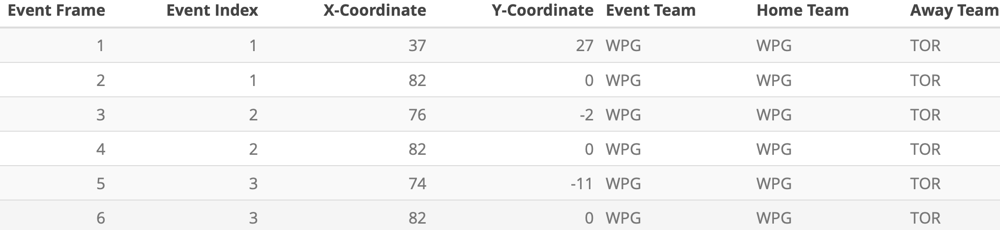
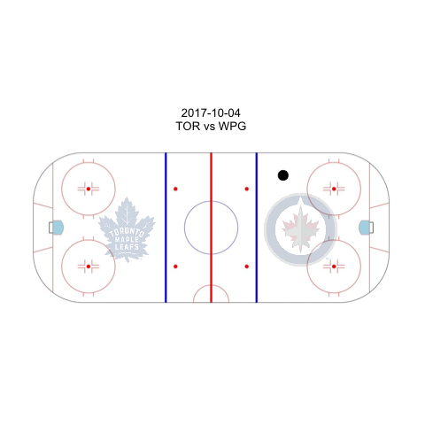
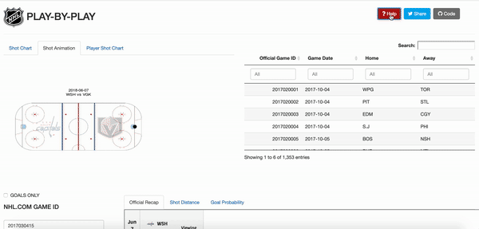

Introduction
I created a web application for interactively visualizing shot data for all games in the 2017-2018 season. In this article, I will walk through a month-long process building the National Hockey League Play-by-Play App from scratch, giving a behind-the-scenes look.
The Process
What started this project was this #rstats Shiny contest tweet. Shiny is a R package built by RStudio for creating interactive web applications. It allows R programmers to create web applications without having to exclusively code in HTML, CSS or JavaScript. I had looked at several sports visualizations (e.g. Ryo’s Visualize the World Cup) and wanted to create something similar in hockey. This announcement provided the motivation for me to start.
I started sharpening my Shiny skills by taking DataCamp’s Shiny Course. I particularly found Chapter 2 (Inputs, outputs, and rendering functions) and Chapter 3 (Reactive Programming) helpful in reminding myself of the essence of Shiny. They are great visual learning resources and I highly recommend beginners in Shiny take this course.
Now, I focused on the structure of my application. The organization of a product is instrumental in its usability, so I wanted to get it right. I looked at the Shiny Application Layout Guide and decided to go with the Grid Layout, which contains a plot at the top and parameters of the plot at the bottom in a three column format. This is the best organization for focusing the users on the animation at the top. The secondary features, which are the parameters controlling the plot, are stationed at the bottom.
Now, to the animation. I relied on Ryo’s World Cup animations, which was rendered in gganimate, a R package for animations compatible with ggplot2. Unfortunately, unlike Ryo’s dataset, my dataset doesn’t contain coordinate data points with the location of each player over time. Rather, my Play-by-Play, Real Time Scoring System dataset contains shot location:

If the NHL had tracked real time coordinate data like the NFL, I could have created a fluid animation like this:

So, here is a hack I came up with. First, I’ve normalized the shot locations so that all shots taken by the home team were shown on the right and shots taken by the away team were shown on the left. Then, after every shot location data, I input (x,y) coordinates (82, 0) and (-82, 0) to mark the location of both nets. Next, I created a column called event_index that groups each pair of shot data (1 row for shot location, 1 row for net location). I then created a column called event_frame that numerates all the rows. Last, I used group aesthetic on event_index and added transition_components(time = event_frame) to render the animation.

This was all great, but I realized that the gganimate package doesn’t yet work with Shiny. There is no function designed to render gganimate animations on Shiny. In other words, there was no natural way to put my animations on my end product, which was a huge concern.
This StackOverflow answer was super helpful in coming up with another hack. It recommended saving the animation as a .gif file and returning the file as a list along with the dimensions of the animation. There is one drawback to this method though: the animation looks stretched out if I increase the width too much, and it moves downward if I increase the height too much. As a result, what I currently have is the best I could come up with: high image resolution and optimal placement.
The animation happens on a NHL ice rink created by War On Ice. I added “reactive” team logos on Shiny to clearly indicate which side is the home/away side. Also, in the app, users need to input the official game ID in order to navigate between games. In order to facilitate this process, I included a datatable of all the game IDs, game dates, home teams, and away teams next to the animation. That way, the user can find the desired game by searching through game dates or teams, locate the right Game ID, and render the right animation.

Now, the other visualizations. I took a long, hard look at the dataset and thought about which columns to make use of. I thought the shot distance was pretty interesting, so I created a histogram of the shot distance. This illustrates the number of shots a team took at a certain distance from the net. To help the user interpret the distances, I labelled the location of the faceoff circles, blue line, and the red line. Furthermore, expected goal probability is a frequently occuring metric in hockey analytic discussions. I thought it would be interesting to see its change throughout the game. As a result, I animated expected goal probabilities for each team. This plot generated the most buzz.

Last, I wanted to include a summary of the game by showing the boxscore. However, I ran into too many roadblocks with html / css, so I decided to simply show the nhl.com official recap.
Some neat features I added to the app include a short tour using the rintrojs package. When the user presses the Help bottom on the top right corner, Shiny gives a short tour, explaining what each of the parameters do. Also, the “Share” button allows users to easily share the app with a custom message I included and the “Code” button redirects users to the Github repo.

Result
The final product is available here: NHL Play-by-Play App
Update: This app received a Honorable Mention from RStudio’s 1st Shiny Contest